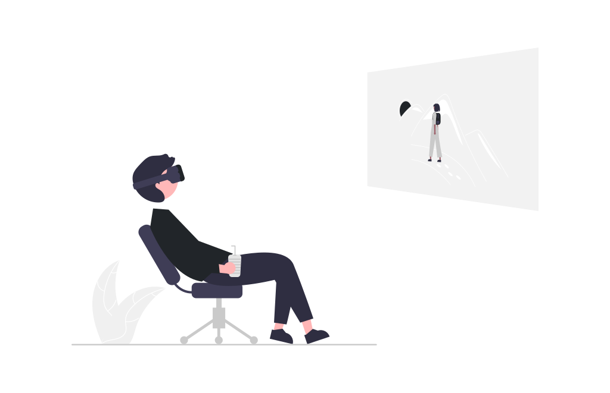
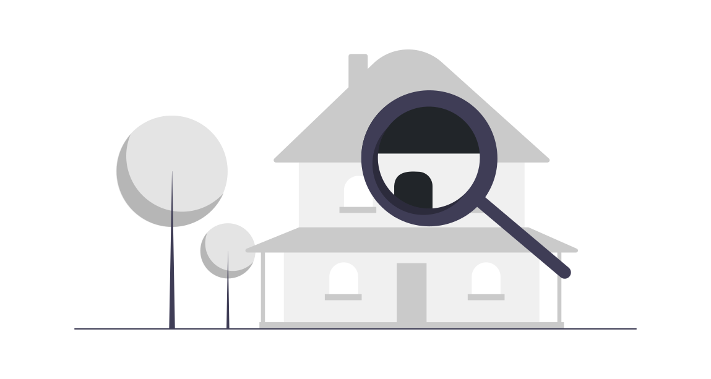

Color Blind Test
คือการทดสอบความสามารถในการมองเห็นสี มักใช้ในการตรวจคัดกรองตาบอดสีในเด็กและในผู้ที่ต้องประกอบอาชีพที่ต้องมีการมองเห็นสีที่ปกติ เช่น นักบิน ทหาร ผู้บังคับจราจรทางอากาศ พนักงานขับรถ ฯลฯ เพราะอาจจะเห็นสัญญาณการเตือนภัยต่าง ๆ ไม่ชัดเจน และก่อให้เกิดผลเสียต่าง ๆ ได้อย่างมหาศาล ดังนั้น ในขั้นตอนการตรวจร่างกายเพื่อสมัครเข้าทำงานเหล่านี้ จึงจำเป็นต้องมีการทดสอบตาบอดสีของผู้สมัครด้วย ซึ่งหากใครทดสอบไม่ผ่านก็จะไม่สามารถผ่านการตรวจร่างกายได้ วันนี้เราได้จัดทำเว็บไซต์เพื่อหาเปอร์เซ็นความเสี่ยงของการเป็นโรคตาบอดสี !